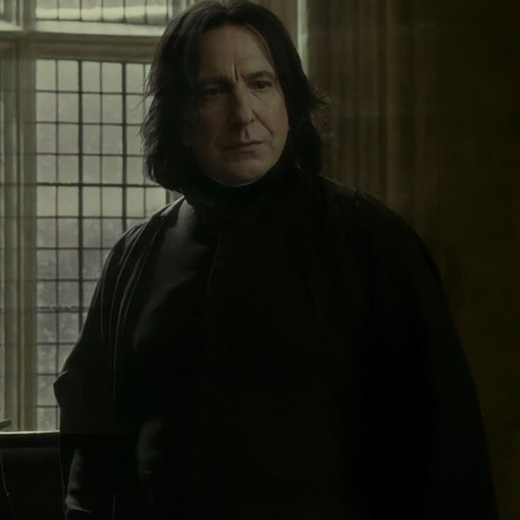

Characters from my House



Slytherin House
• Ambition • Cunning • Determination • Resourcefulness •
Slytherin was founded by Salazar Slytherin, a cunning and ambitious wizard who valued cleverness, ambition, determination, and blood purity.
Historically, the house has been home to powerful and often controversial wizards, including figures such as Severus Snape and Tom Riddle (Voldemort).

Hedwig's Theme
John Williams